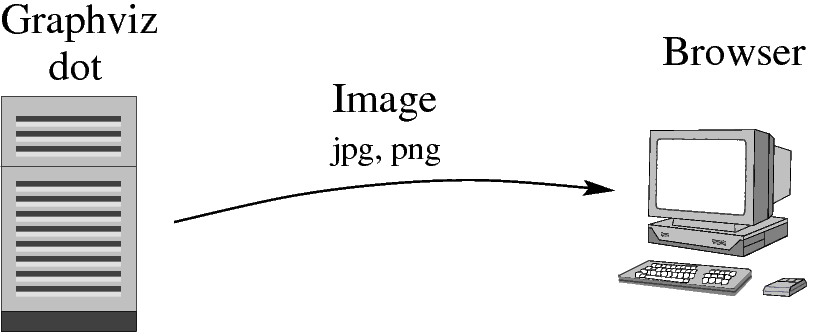

Server-side generated images.
Draw and visualize graphs in a web browser.
Click on nodes to select, ctrl+click for multiple selection
Drag nodes to move them
<div id="graph1"></div>
JSDot("graph1", {mode: "drag",
json: '{"nodes":[
{"name":"n1","position":[50,50]}],
"edges":[]}'});
var j = new JSDot("graph1");
j.importJSON('{"nodes":[
{"name":"n1","position":[50,50]}],
"edges":[]}');
var s = j.exportJSON();
Changing graphs through the API.
1: var j = new JSDot();
2: var g = j.getGraph();
3: var n = g.createNode();
4: n.setPosition([100, 80]);
5: n.setLabel('box node');
6: n.setStencil('box');